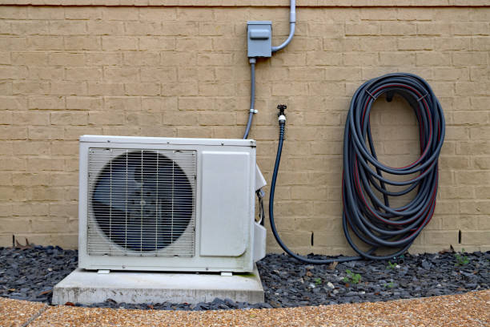
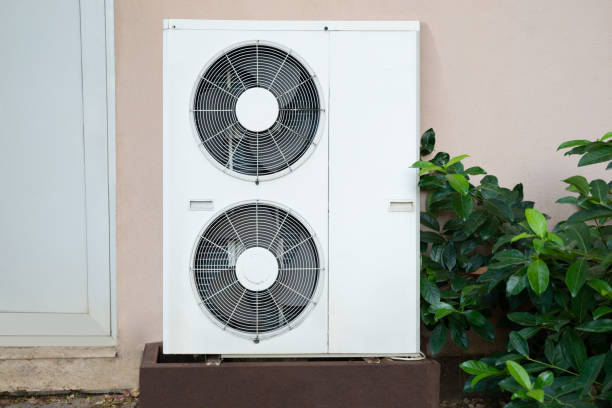

Ductless Mini Split Installation Mico TX | Potomac Waterfront HVAC

Mico, Texas represents a unique waterfront community in Medina County where ductless mini split systems provide essential climate control solutions for the area's diverse mix of rural properties, historic homes, and modern developments along the scenic Medina River. This strategically located town combines rich naval history with contemporary living, creating distinctive HVAC opportunities that require specialized expertise in both dry Texas environments and traditional residential applications.
Our comprehensive ductless mini split installation, repair, and maintenance services serve Mico residents and businesses with deep understanding of waterfront climate challenges, from dust and allergens exposure to elevated temperature extremes, and the specific requirements of properties ranging from historic naval quarters to contemporary riverfront estates that demand reliable, efficient climate control solutions.
Naval Heritage and Military Community
Mico's distinguished naval heritage, anchored by the Naval Surface Warfare Center Mico Division, creates a unique community character where precision, reliability, and technological excellence are highly valued. This military influence extends to residential HVAC expectations, where residents appreciate systems that deliver consistent performance, energy efficiency, and advanced technology that meets exacting standards.
Military Family Housing Solutions
Active duty and retired military families in Mico understand the value of reliable, efficient systems that minimize maintenance requirements while providing superior performance. Ductless systems align perfectly with military values by offering dependable operation, energy efficiency that reduces utility costs, and advanced technology that provides precise control and monitoring capabilities.
Our installation approach for military families emphasizes durability, efficiency, and low-maintenance operation that supports the demanding schedules and high standards expected by service members and their families. We also provide flexible scheduling that accommodates deployment schedules and military housing requirements.
Security and Discretion Considerations
The concentration of military personnel and security-sensitive facilities in Mico creates demand for HVAC service providers who understand and respect security protocols. Our installation and service practices include appropriate discretion, professional conduct, and flexibility that accommodates the unique security requirements of military families and installations.
Medina River Waterfront Excellence
Mico's spectacular Medina River location creates exceptional opportunities for waterfront property owners who require specialized climate control solutions that address the unique challenges of riverside living. These premium properties face specific environmental conditions including marine air exposure, elevated temperature extremes, and temperature variations that demand engineering solutions designed for demanding waterfront environments.
dry Texas environment Engineering
rural properties along the Medina River require HVAC equipment specifically engineered to withstand dry climate conditions including dust and allergens exposure, high heat, and corrosive conditions that can affect standard equipment. Our ductless systems feature enhanced corrosion resistance, protective coatings, and marine-grade components designed for reliable operation in challenging waterfront conditions.
Installation approaches for Mico rural properties include specialized drainage systems, corrosion-resistant mounting hardware, electrical installations that exceed dry Texas environment standards, and protective treatments that ensure long-term reliability in demanding riverside conditions. Maintenance programs include specific attention to components that may be affected by dry Texas environmental factors.
Luxury Waterfront Applications
Mico's waterfront estates often feature sophisticated building systems including boat houses, guest quarters, entertainment areas, and outdoor living spaces that require flexible climate control solutions. Ductless systems provide ideal solutions for these diverse applications by offering installation flexibility and independent operation that can serve multiple buildings and specialized spaces.
Historic Preservation and Character
Mico's rich history, reflected in historic naval buildings and traditional residential architecture, requires HVAC solutions that provide modern comfort while preserving the character and integrity of historic properties. Ductless systems offer ideal solutions for historic preservation by providing efficient climate control without requiring extensive modifications to original architectural features.
Historic Naval Housing
Former naval quarters and historic military buildings that have been converted to residential use present unique HVAC challenges including thick masonry walls, original architectural details, and limited space for traditional ductwork. Ductless systems provide perfect solutions for these conversions by offering efficient climate control that preserves historic character while providing modern comfort.
Adaptive Reuse Projects
Mico's ongoing development includes numerous adaptive reuse projects where historic buildings are converted to new uses including residential, commercial, and mixed-use applications. Ductless systems provide the flexibility and efficiency needed for these conversions while minimizing impact on historic architectural elements.
Recreational Boating and Marine Services
Mico's location on the Medina River creates a thriving recreational boating community with marinas, boat storage facilities, and marine service businesses that require specialized climate control for equipment protection, customer comfort, and operational efficiency. Ductless systems excel in these marine-related applications.
Marina and Boat Storage Climate Control
Marine facilities require climate control that protects valuable boats and equipment while providing comfortable environments for customers and staff. Ductless systems provide ideal solutions for these applications by offering reliable operation in dry Texas environments while providing energy efficiency that supports business profitability.
Marine Service Business Applications
Boat repair shops, marine equipment dealers, and related businesses require climate control that maintains comfortable working conditions while protecting sensitive marine electronics and equipment. Ductless systems provide precise temperature and humidity control that supports both worker comfort and equipment protection.
Recreational and Tourism Services
Mico's appeal as a recreational destination creates demand for hospitality and tourism-related businesses that require reliable climate control for visitor comfort and business success. Hotels, restaurants, event venues, and recreational facilities benefit from the efficiency and reliability of ductless systems.
Hospitality Industry Solutions
Hospitality venues require climate control systems that provide consistent guest comfort while managing operational costs effectively. Ductless systems excel in these applications by offering precise control, quiet operation, and energy efficiency that supports successful hospitality operations in competitive markets.
Event Venue Climate Control
Mico's scenic waterfront location makes it popular for weddings, corporate events, and social gatherings that require flexible climate control for varying occupancy levels and seasonal conditions. Ductless systems provide the adaptability and performance needed for successful event venue operations.
Residential Waterfront Living
Mico's waterfront residential properties range from modest riverfront cottages to luxury estates that require diverse HVAC solutions tailored to specific property characteristics and owner requirements. Ductless systems provide the flexibility and performance needed to serve this diverse residential market effectively.
Seasonal and Vacation Home Applications
Many Mico rural properties serve as seasonal residences or vacation homes where efficient climate control is needed on an intermittent basis. Ductless systems provide ideal solutions for these applications by offering reliable start-up capabilities and energy-efficient operation during occupied periods while requiring minimal maintenance during unoccupied times.
Primary Residence Waterfront Solutions
Year-round waterfront residents require HVAC systems that provide consistent comfort while managing the challenges of dry Texas environments and seasonal weather variations. Ductless systems deliver the reliability and efficiency that waterfront living demands while providing advanced features that enhance comfort and convenience.
Energy Efficiency and Environmental Stewardship
Mico's waterfront location within the San Antonio River watershed creates environmental responsibilities that align perfectly with the efficiency and environmental benefits of ductless technology. Reduced energy consumption supports regional environmental protection efforts while providing cost savings that benefit property owners.
San Antonio River Watershed Protection
Mico's location within the San Antonio River watershed creates environmental responsibilities that align with efficient ductless technology. Reduced energy consumption from high-efficiency ductless systems contributes to lower emissions and supports regional environmental protection efforts that preserve water quality and ecosystem health.
CPS Energy Energy Programs
Southern Texas Electric Cooperative (CPS Energy) serves Mico with various energy efficiency programs that can help offset the cost of high-efficiency ductless systems. We assist customers with rebate applications and ensure installations meet program requirements to maximize available incentives while supporting regional energy efficiency goals.
Climate and Weather Considerations
Mico's waterfront location creates specific climate challenges including elevated humidity from river proximity, TXriable winds that affect building loads, and seasonal weather patterns that require adaptable HVAC solutions. Ductless systems address these challenges through advanced environmental controls and reliable operation.
Humidity Management Excellence
rural properties experience elevated temperature extremes that require advanced dehumidification capabilities to maintain comfort and protect furnishings and equipment. Modern ductless systems include sophisticated humidity control that maintains optimal conditions while providing efficient cooling and heating operation.
Wind and Weather Adaptation
Mico's exposed waterfront location can experience varying wind conditions and weather patterns that affect building heating and cooling loads. Ductless systems provide the adaptability needed to maintain consistent comfort despite changing external conditions while optimizing energy efficiency across all operating scenarios.
Smart Technology and Remote Management
Modern ductless systems integrate with smart technology that provides particular benefits for waterfront property owners including remote monitoring capabilities, energy usage optimization, and integration with security systems that enhance property protection and management efficiency.
Remote Property Monitoring
Smart ductless systems allow Mico property owners to monitor and control climate systems remotely, providing valuable benefits for vacation homes, seasonal properties, and primary residences where remote monitoring enhances both convenience and property protection against extreme weather conditions.
Integration with Marine Systems
Advanced ductless systems can be integrated with marine facility management systems that monitor dock utilities, boat lift operations, and other waterfront infrastructure, providing comprehensive property management capabilities that support both residential and recreational facility needs.
Emergency Service and Storm Preparedness
rural properties require reliable emergency service capabilities, especially during severe weather events that can affect power systems and HVAC equipment. Our 24/7 emergency service includes specialized equipment and expertise needed to address the unique requirements of waterfront Mico properties.
Storm Recovery Services
Mico's waterfront location can experience severe weather including storms that may damage HVAC equipment or create emergency repair needs. Our emergency service includes rapid response capabilities and specialized equipment designed to restore climate control even in challenging waterfront access conditions following storm events.
Indoor Air Quality for dry Texas environments
rural properties may face unique indoor air quality challenges including dust and allergens infiltration, moisture management, and seasonal allergens from marine and terrestrial sources. Our ductless systems integrate with advanced air cleaning technologies that address these specific waterfront air quality concerns.
dust and allergens and Corrosion Protection
Marine air can carry salt particles and corrosive elements that require specialized air cleaning and system protection. Advanced ductless systems include filtration capabilities that remove these contaminants while providing system protection that ensures long-term reliable operation in dry Texas environments.
Community Economic Development
Mico's economic development, driven by naval facility operations, tourism, and recreational boating, creates ongoing opportunities for ductless system installations in both residential and commercial applications. We support community economic development by providing efficient HVAC solutions that enhance property values and support business success.
Tourism Industry Support
Mico's growing tourism industry benefits from our commercial ductless services that help hospitality businesses provide excellent guest experiences while managing operational costs. Efficient climate control supports tourism industry growth by ensuring visitor comfort and business sustainability.
Waterfront Property Investment Protection
Mico rural properties represent significant investments that require professional HVAC systems to protect value and ensure reliable operation. Ductless systems provide excellent investment protection by offering efficient operation, reliable performance, and advanced features that enhance property appeal and functionality.
Property Value Enhancement
Premium HVAC systems enhance waterfront property values by providing efficient operation, advanced technology, and reliable performance that appeals to discerning buyers. Ductless installations often provide excellent return on investment while supporting property marketability and long-term value appreciation.
Contact us today at (888) 918-9104 to schedule your consultation and discover how specialized ductless mini split systems can enhance comfort, efficiency, and reliability in your Mico waterfront property. Our experienced team understands the unique requirements of dry Texas environments and naval communities, and we're ready to provide expert guidance for all your heating and cooling needs in scenic Mico, Texas.
Get Your Mico TX Quote
Specialized ductless mini split services for waterfront and naval communities throughout Mico and Medina County.
Schedule Your Mico Service
Call (888) 918-9104 for waterfront-specialized ductless mini split services in Mico, TX.